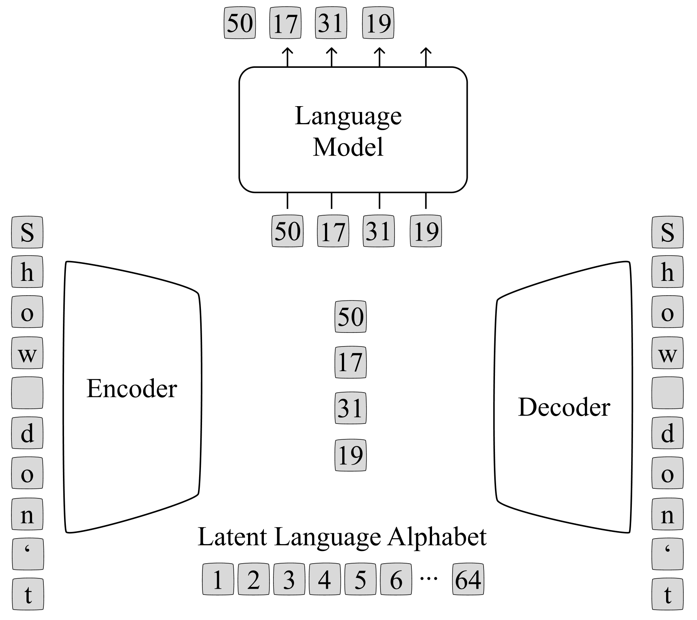
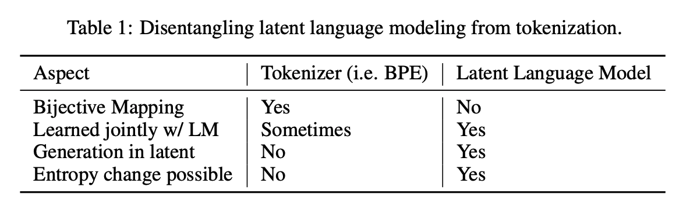
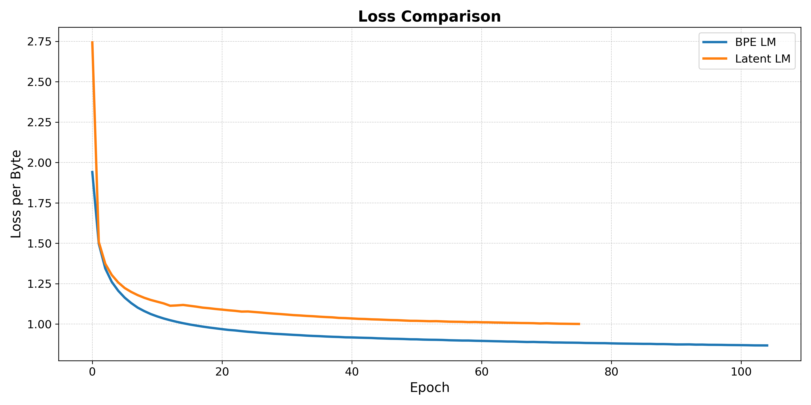

Language, Entropy, and Language Modeling
Is English—developed over millennia to suit the communication preferences of humans—really the ideal language that machines would use to think, reason, and learn? Almost certainly not.
Foreword
I was inspired to write this after reading the excellent work Dynamic Chunking for End-to-End Hierarchical Sequence Modeling, developed by Sukjun Hwang, Brandon Wang, and Albert Gu. Their work proposes a clever method for training on raw input characters\footnote{I use "characters" and "bytes" interchangeably, but prefer the term "characters" because it is more strongly associated with NLP in my priors.} by compressing a sequence of input characters (discrete space) into a sequence of latent representations (continuous space). This sequence of latent representations is then passed through a language model, and then upsampled back to the character space by a Decoder network. Albert's blog post expands upon some of their motivations, challenges, and failed approaches—and especially given this last point—I was encouraged to share some of my own experiments and learnings around tokenization.
I've been working on a flavor of tokenization—to be precise, trying to train Language Models on a latent language designed for autoregressive modeling—off and on since January, but between graduating, starting a company, watching said company disintegrate, working to help a friend start their company, applying to jobs, getting kicked out of Stanford graduate housing, and finally couch surfing around South Bay for this past month, I've been remiss in driving this project to completion.
I hope that someone might be able to build upon, flesh out, or even take umbrage with the ideas presented in this post and draw them out to a satisfactory conclusion.
Language Modeling
One of the first things you teach students in an introductory NLP course is the derivation of language modeling objective from maximum (log)likelihood estimation: \begin{align*} \max \mathbb{E}_{x \sim D} \left[\log p_\theta(x_1, ..., x_n)\right] &= -\min \mathbb{E}_{x \sim D} \left[\log p_\theta(x_1, ..., x_n)\right]\\ &= -\min \sum\limits_{x\sim D} p(x_1, ..., x_t)\log p_\theta(x_1, ..., x_n) \\ &\approx -\min \sum\limits_{x\sim D} \frac{1}{|D|} \log p_\theta(x_1, ..., x_n) \\ &= -\min \frac{1}{|D|} \sum\limits_{x\sim D} \sum\limits_{i=1}^t \log p_\theta(x_t|x_1, ..., x_{t-1})\\ \end{align*} And then maybe a little later on, you take a course in information theory (or read Cryptonomicon\footnote{Neal Stephenson's novel offers a great introduction to information theory in the context of a historical fiction narrative.}) and realize that this really just the cross entropy between two distributions: $p$ is the "true" conditional distribution from written English and $p_\theta$ is the distribution your language model learns over the course of training. With this understanding, you can rewrite the language modeling objective as the sum of the entropy of the underlying language and the KL-divergence between the predicted language distribution and the actual language distribution: \begin{align*} \mathcal{L} &= -\frac{1}{|D|} \sum\limits_{x\sim D} \sum\limits_{i=1}^t \log p_\theta(x_t|x_1, ..., x_{t-1})\\ &= \sum\limits_{x\sim D} p(x) -\log p_\theta(x) \\ &= \sum\limits_{x\sim D} p(x) \left[\log p(x) - \log p(x) - \log p_\theta(x)\right] \\ &= \sum\limits_{x\sim D} -p(x) \log p(x) + p(x) \left[\log p(x) - \log p_\theta(x)\right] \\ &= \underbrace{\sum\limits_{x\sim D} -p(x) \log p(x)}_{H(X)} + \underbrace{\sum\limits_{x\sim D} p(x) \log \frac{p(x)}{p_{\theta}(x)}}_{KL(p||p_{\theta})} \end{align*} where $H(X)$ is the entropy of the English language and $KL(p||p_{\theta})$ is the KL-divergence between the true distribution $p$ and your learned distribution $p_{\theta}$. Informally, the KL-divergence is a measure of how "off" $p_{\theta}$ is from $p$\footnote{The KL divergence between $p$ and $p_{\theta}$ can be interpreted as the number of extra bits needed to compress $p_{\theta}$ when you use a code optimized for $p$.}. When our language model perfectly models the distribution of the English language, this term drops to 0, and we're left with H(X), the entropy of the English language.
Ok; so we're training our language model to minimize $\min H(X) + KL(p||p_{\theta})$, but $H(X)$ is not a function of $\theta$, so we're really just minimizing $KL(p||p_{\theta})$. As a result, the lower bound on the cross entropy loss will be $H(X)$, and even the theoretically "perfect" language model will be unable to break past this threshold. Or can it?
Learning a Latent Language
The only way to decrease $H(X)$ is to reduce the entropy of the written English language. This seems really hard, but maybe we can cheat a bit. But first, let's look at sources of entropy in language. Concretely, what are these and do we even want to try to eliminate them?
One of the examples that I love to use here is French. In French, we often modify nouns based on the gender, specifically, we add an "e" to nouns if the speaker is female. For example: The english phrase
Putting yourself in the proverbial shoes of a LLM trained to on French literature, generating this last token is really hard: it's a coin flip without knowing the gender of the speaker. However, by moving to English— we eliminate this source of uncertainty because our nouns do not change based on the gender of the speaker.
Going back to the first question, how might we cheat? Well, we fundamentally need a different language, one with a lower entropy than English, and ideally, other characteristics—such as sequence length and the distribution of entropy across tokens—that is more amenable to next-token prediction than English is. Maybe we can learn it in an end-to-end fashion, similar to how recent works try to learn how sequences of adjacent characters should be merged together into tokens \cite{hwang2025dynamic, blt, nawrot2022efficient, nawrot2021hierarchical}.
Latent Language Implementation
As a first approximation, we want to learn a latent language with two properties:
- It is easy for an LM to model.
- It can be converted to and from English with relative ease.
Borrowing from what already works in Computer Vision as a v1 attempt \cite{taming, ldm} for latent space image generation, let's try jointly training a compression model alongside a language model. The compression model is composed of two components: an Encoder ($\mathcal{E}$) and a Decoder ($\mathcal{D}$). The Encoder takes in a sequence of characters and outputs a (compressed) sequence of discrete latent tokens, using Vector Quantization to map the Encoder's output to the nearest token in our latent language. The Decoder is then tasked with reconstructing the original English sentence from the (compressed) sequence of latent language tokens.
This Encoder-Decoder paradigm is enough to learn a latent language, but there's no a priori reason that latent language would be easy for a LM to model or have desirable properties that make it better than English. To try and satisfy this first characteristic, we jointly train a Language Model alongside the compression model, making the next-token prediction loss backpropagate through the language model and back through the Encoder. The balance of the compression model minimizing reconstruction error, combined with the Language Model minimizing next-token prediction error, would hopefully avoid non-degenerative solutions\footnote{Such as the language model collapsing the latent vocabulary to a single, easy-to-predict token.} and learn a latent language that is more easy to model than English.
Such an architecture might look like the one below:

Where the Encoder and Decoder are instantiated as non-causal sequence models, specifically a BERT\cite{bert} model. I chose a non-causal model because it enables better compression than a causal model: information from later in the sequence can become blended into tokens that appear earlier into the sequence, expanding the space of latent languages that could be learned. Specifically, it might be desirable to develop a language where the characters that appear early in the sequence are strongly (and in turn influence) characters that appear at the end of the sequence\footnote{The OG Attention Is All You Need transformer architecture follows a similar pattern for machine translation, using a non-causal Encoder.}.
For the actual compression and decompression methods, I played around with several different techniques for static compression (i.e. we go from an input character sequence length of $t$ to a latent token sequence of length $t / c$ where $c$ is the compression factor):
- A simple 1d convolution across the sequence dimension with kernel size $k$ and stride $c$.
- A state-space model\cite{mamba}, emitting a token every $c$ steps.
- Top-k attention pooling (where $k= t/c$).
- A linear layer to project each $d$-dimensional token down to $d/c$ and then reshaping the sequence length to merge every $c$ tokens together.
- A linear transformation on the sequence dimension itself: if the input is (b, t, d), then we can learn a per-feature dimension linear map to project to (b, t/c, d).
Out of these, (1) and (2) performed the best, with similar training metrics. Decompression of the conv1d is simply a transposed 1d convolution, and for the SSM, we duplicate each token in the compressed sequence $c$ times, add learnable positional embeddings $(1, 2, ..., c)$, and pass this input through a Decoder-side SSM to feed into the BERT-style Decoder model.
For the language model, I went with a GPT-2 small architecture\cite{gpt2}. I would have really liked to scale up the parameters on both the compression model and language model, but I'm limited by access to compute.
The joint training objective is a linear combination of the compression model and language model objectives: $$\mathcal{L}(x) = \underbrace{-\sum\limits_{i=1}^t \log p_\theta(x_i|z)}_{\text{compression model loss}} \underbrace{-\beta \sum\limits_{k=1}^{t/c} \log q_\phi(z_k|z_{ < k})}_{\text{language model loss}}$$ where $x = (x_1, x_2, ..., x_t)$ is the input sequence of characters, $z = (z_1, ..., z_{t/c})$ is sequence of latent tokens, $\beta$ is a loss-weighing factor for the multi-task objective, $p_\theta$ is the Decoder's distribution over English characters, and $q_\phi$ is the language model's distribution over the latent alphabet.
Remarks on Lossy Compression and No Free Lunch
You'll notice this approach employs lossy compression; the Decoder network does not perfectly reconstruct the
English characters input to the decoder. This differs from tokenization methods which bijectively map sequences of english characters into
tokens. However, bijective functions cannot reduce entropy: $H(X) = H(f(X))$ where $f$ is a bijective function.
If we want to develop a latent language that has lower entropy than English, some sort of lossy compression is needed.

You will also notice that we are still computing the cross-entropy loss with respect to English characters: $P(x_i|z)$ for the sequence of latent tokens $z = (z_1, ..., z_{t/c})$, so in a sense, we're continuing to pay the entropy penalty for the English language. We're just changing where that price is paid, moving part of the cost from the language model to the compression model.
Let's return to our hypothetical example of translating between French and English. The French phrase:
Results
For the following results, I use a BPE checkpoint trained for 100 epochs while the latent language model was only trained for 75 epochs (when I lost access to compute). I just used the OpenWebText dataset\cite{owt}, writing and epoch every ~3,000 steps. Both bpe and latent language models used the exact same training settings: learning rate of 5e-5, dropout of 0.05, sequence length of 512 characters, etc.
In the below plot, we compare a standard BPE model trained on OpenWebText to a latent language model trained on the same dataset. Using the notation from earlier, this compares $H(X) + KL(p||p_\theta)$ for the BPE model with $H(Z) + KL(q||q_\phi)$ for the latent language model where the latent language model uses a compression factor of $c=2$ while the BPE model uses a compression factor of $c=4.1$. We compute loss-per-character, normalizing default the BPE cross-entropy loss by 4 and the latent language cross-entropy loss by 2.

It's also interesting to look at the distortion from the compression model, i.e., $H(X|Z)$. This term is very small, on the order of 1e-4, indicating the compression model is able to reconstruct the input sentences through the information bottleneck with relative ease.
Perhaps more interesting than the distortion from the reconstructions, we can look at the distortion from the output of the language model during training with teacher forcing. How well does the Decoder reconstruct the input (shifted by one token) after taking the most likely latent token output from the language model?
Formally, this term is $P(x|\hat{z})$ where $\hat{z}$ is the sequence of latent tokens output from the language model with highest probability mass. It can be viewed as the distribution over English characters when the "surprise" from selecting the next token is factored out (by the language model). In this experiment, it is $\sim 0.07$. Unsurprisingly, this is substantially lower than the entropy of the English language\footnote{Often estimated to be around 0.6-1.3}, and while the end-to-end method does not work, it's still quite cool to see an output distribution over English characters have such low cross-entropy loss.
Entropy Estimation Analysis
Using our OpenWebText dataset as a proxy for "all written english", we can approximate the inherent entropy of English and compare this value to the inherent entropy of our latent language. We approximate both values by computing 4-gram probabilities on the validation dataset using statistics computed on the training set. For example, the phrase:
We estimate the entropy of English as $\sim 1.8$ bits per character\footnote{Read: bits per byte because we use 8-bit ASCII encodings.} and the entropy of our latent language as $\sim 3.0$ bits per (english) character. This result shows that we did not learn a latent language with lower inherent entropy than English. Specifically, backpropagating the gradients from the next-token language modeling loss back through the Encoder of the compression model does not cause it to develop a latent language with lower inherent entropy than English. I have a couple of ideas for why this didn't work, but haven't (yet) been able to investigate them.
Mapping Latent Tokens to English
It might also be useful to look at how individual (or groups) of latent tokens are mapped to English to better understand the properties of the latent language that was learned. For this analysis, I chose:
e
rud
k
brvwn
f
x b
mpk vver
h
w:_y vog
Example (non-cherry picked) Generations
The following prompts are the starting sentences of the first and second examples in the validation split of the OpenWebText dataset. The next token is sampled with temperature = 0.9, top-p = 0.95, and top_k=50. I did not fine-tune these hyperparameters, they were the default that I found for generating with GPT-2. The latent language model uses a compression factor of $c=2$; although from playing around with other settings, setting $c=4$ also seemed to work well. BPE tokenization on average reduces ever 4.1 adjacent characters to a single token, so we'll approximate the sequential compression factor of BPE as $c=4$.
For the latent language model, we feed the prompt through the encoder, auto-regressively generate in the latent space, and then pass the full sequence (prompt tokens + generated tokens) through the decoder to output an English sentence. As the compression model is lossy, there will occasionally be spelling mistakes in the output, even for the prompt. I've highlighted some of the spelling mistakes in the generations below.
Example 1:
Prompt:
BPE Model (compression factor = ~4.1):
Latent Language Model (compression factor = 2):
Example 2:
Prompt:
BPE Model (compression factor = ~4.1):
Latent Language Model (compression factor = 2):
Thoughts on the Future
A valid question is does this even matter: is there any benefit in reducing the inherent entropy of the underlying data for language modeling? My honest answer is that I really don't know. Looking at a more concrete case, would there any benefit to language modeling in a higher-entropy language like French by first translating the input French prompt to English, generating the response, and then re-translating this entire sentence back to French? You will likely get a different output French sentence—with even the prompt changing on occasion due to the resulting generation—but maybe this is "good enough"? If not, would a latent language be useful in other contexts where decoding back to English is less important? Perhaps in text-conditioned generation to reduce the sequence length of the prompt (i.e. text to image and text to video generation)?
Another point I'd like to address is how a latent language model would be different than tokenization methods, even the most recent dynamic tokenization approaches like H-Nets\cite{hwang2025dynamic}, Dynamic Token Pooling\cite{nawrot2022efficient}, Byte-Latent Transformers\cite{blt}, and Hourglass Networks\cite{nawrot2021hierarchical}? First of all, the cited methods actually work whereas my latent language idea does not :) But a close second is generation in the latent space. For dynamic tokenization methods, the input to inner language model is not actually the language model's output, but rather the language model's output first transformed by the Decoder and then again by the Encoder. The Decoder is needed to figure out the next English token to be generated, and then the Encoder is needed to map this sequence into a representation suitable for the LM to generate the next token. This characteristic contrasts with the notion of a "latent language" where one would be able to autoregressively generate sequences entirely within the latent space.
Extrapolating a bit, it's possible a future generation of language models employ some combination of dynamic chunking within a latent language optimized for machines, not humans. Perhaps this will arise as autonomous agents develop efficient communication protocols to convey information without humans in the loop, but I'll leave these ponderings to the science fiction writers of today rather than blog post of an unemployed and homeless PhD graduate.
Citation
Cite as:
@article{fifty2025latent,
title = "Latent Space Language Modeling",
author = "Fifty, Christopher",
journal = "cfifty.github.io",
year = "2025",
month = "Jul",
url = "https://cfifty.github.io/writings/latent_lm.html"
}References
- @article{hwang2025dynamic, title={Dynamic Chunking for End-to-End Hierarchical Sequence Modeling}, author={Hwang, Sukjun and Wang, Brandon and Gu, Albert}, journal={arXiv preprint arXiv:2507.07955}, year={2025} }
- @article{nawrot2022efficient, title={Efficient transformers with dynamic token pooling}, author={Nawrot, Piotr and Chorowski, Jan and Lancucki, Adrian and Ponti, Edoardo M}, journal={arXiv preprint arXiv:2211.09761}, year={2022} }
- @article{nawrot2021hierarchical, title={Hierarchical transformers are more efficient language models}, author={Nawrot, Piotr and Tworkowski, Szymon and Tyrolski, Michal and Kaiser, Lukasz and Wu, Yuhuai and Szegedy, Christian and Michalewski, Henryk}, journal={arXiv preprint arXiv:2110.13711}, year={2021} }
- @inproceedings{taming, title={Taming transformers for high-resolution image synthesis}, author={Esser, Patrick and Rombach, Robin and Ommer, Bjorn}, booktitle={Proceedings of the IEEE/CVF conference on computer vision and pattern recognition}, pages={12873--12883}, year={2021} }
- @inproceedings{ldm, title={High-resolution image synthesis with latent diffusion models}, author={Rombach, Robin and Blattmann, Andreas and Lorenz, Dominik and Esser, Patrick and Ommer, Bj{\"o}rn}, booktitle={Proceedings of the IEEE/CVF conference on computer vision and pattern recognition}, pages={10684--10695}, year={2022} }
- @inproceedings{bert, title={Bert: Pre-training of deep bidirectional transformers for language understanding}, author={Devlin, Jacob and Chang, Ming-Wei and Lee, Kenton and Toutanova, Kristina}, booktitle={Proceedings of the 2019 conference of the North American chapter of the association for computational linguistics: human language technologies, volume 1 (long and short papers)}, pages={4171--4186}, year={2019} }
- @article{mamba, title={Mamba: Linear-time sequence modeling with selective state spaces}, author={Gu, Albert and Dao, Tri}, journal={arXiv preprint arXiv:2312.00752}, year={2023} }
- @article{gpt2, title={Language models are unsupervised multitask learners}, author={Radford, Alec and Wu, Jeffrey and Child, Rewon and Luan, David and Amodei, Dario and Sutskever, Ilya and others}, journal={OpenAI blog}, volume={1}, number={8}, pages={9}, year={2019} }
- @misc{owt, title={OpenWebText Corpus}, author={Aaron Gokaslan and Vanya Cohen}, howpublished={\url{http://Skylion007.github.io/OpenWebTextCorpus}}, year={2019} }
- @article{blt, title={Byte latent transformer: Patches scale better than tokens}, author={Pagnoni, Artidoro and Pasunuru, Ram and Rodriguez, Pedro and Nguyen, John and Muller, Benjamin and Li, Margaret and Zhou, Chunting and Yu, Lili and Weston, Jason and Zettlemoyer, Luke and others}, journal={arXiv preprint arXiv:2412.09871}, year={2024} }